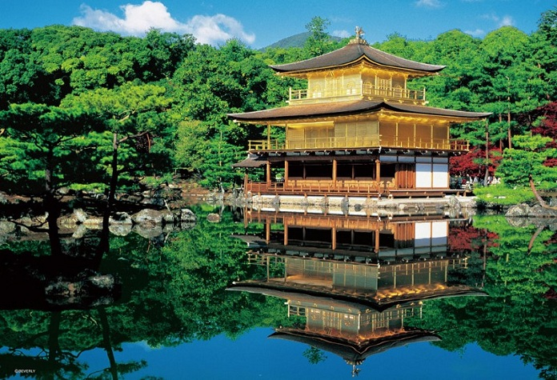
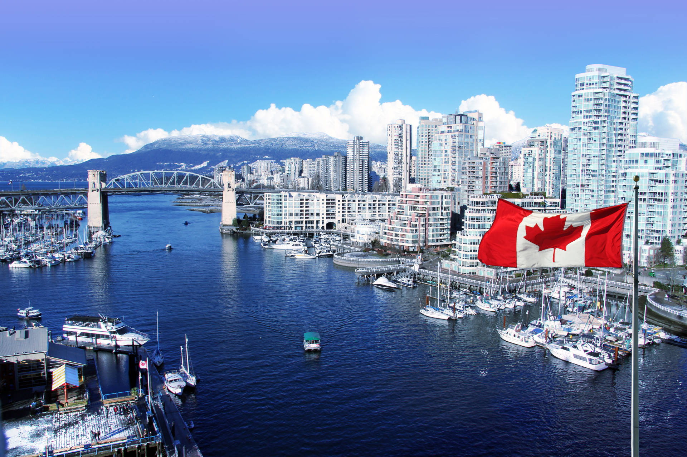

Estados Unidos

Os EUA são um país com 50 estados que cobrem uma vasta faixa da América do Norte, com o Alasca ao noroeste e o Havaí no Oceano Pacífico, estendendo a presença do país. As principais cidades da costa atlântica são Nova York, um centro financeiro e cultural global, e a capital, Washington, DC. Chicago, uma metrópole do centro-oeste, é conhecida por sua importante arquitetura, enquanto Los Angeles, na costa oeste, é famosa pelas produções cinematográficas de Hollywood
Pontos Turisticos
1. Central Park
2. Las Vegas Strip
3. Cataratas do Niágara
Coreia do Sul
A Coreia do Sul, uma nação do Leste da Ásia localizada na metade sul da Península da Coreia, compartilha uma das fronteiras mais militarizadas do mundo com a Coreia do Norte. Ela também é conhecida pelo interior verde, com colinas repletas de cerejeiras e templos budistas com séculos de existência, além de vilas de pescadores na costa, ilhas subtropicais e cidades com tecnologia avançada como Seul, a capital.
Pontos Turisticos
1.N Seoul Tower
2.Gyeongbokgung

3.Gangnam
Japão
O Japão, país insular no Oceano Pacífico, tem cidades densas, palácios imperiais, parques nacionais montanhosos e milhares de santuários e templos. Os trens-bala Shinkansen conectam as principais ilhas: Kyushu (com as praias subtropicais de Okinawa), Honshu (onde ficam Tóquio e a sede do memorial da bomba atômica de Hiroshima) e Hokkaido (famosa como destino para a prática de esqui). Tóquio, a capital, é conhecida por seus arranha-céus e lojas e pela cultura pop.
Pontos Turisticos
1.Fushimi Inari Taisha Shrine
2.Kinkakuji Temple
3.Meiji Jingu Shrine
Canada

O Canadá é um país norte-americano que se estende desde os EUA, no sul, até o Círculo Polar Ártico, no norte. Entre suas grandes cidades estão a gigantesca Toronto; Vancouver, centro cinematográfico da costa oeste; Montreal e Québec City, que falam francês; e a capital, Ottawa. As vastas regiões de natureza selvagem do Canadá compreendem o Parque Nacional de Banff, repleto de lagos nas Montanhas Rochosas. Abriga também as Cataratas do Niágara, um famoso conjunto de enormes cachoeiras.
Pontos Turisticos
1.Myra Canyon Park
2.Rypley’s Aquarium of Canadá
3.Parliament Hill

Nova Zelândia

A Nova Zelândia é um país no sudoeste do Oceano Pacífico formado por 2 ilhas principais, ambas marcadas por vulcões e glaciações. Na capital Wellington, na Ilha Norte, fica o museu nacional Te Papa Tongarewa. O imponente Monte Victoria, em Wellington, o Fiordland, na ilha Sul, e os Lagos do Sul foram cenário da mítica Terra Média nos filmes da série "O Senhor dos Anéis", de Peter Jackson.
Pontos Turisticos
1.Tongarino National Park